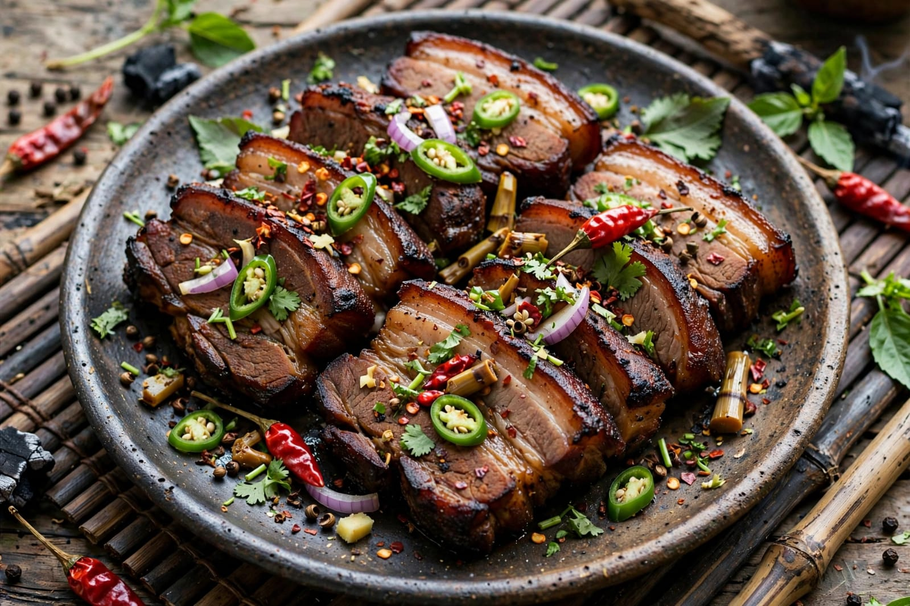
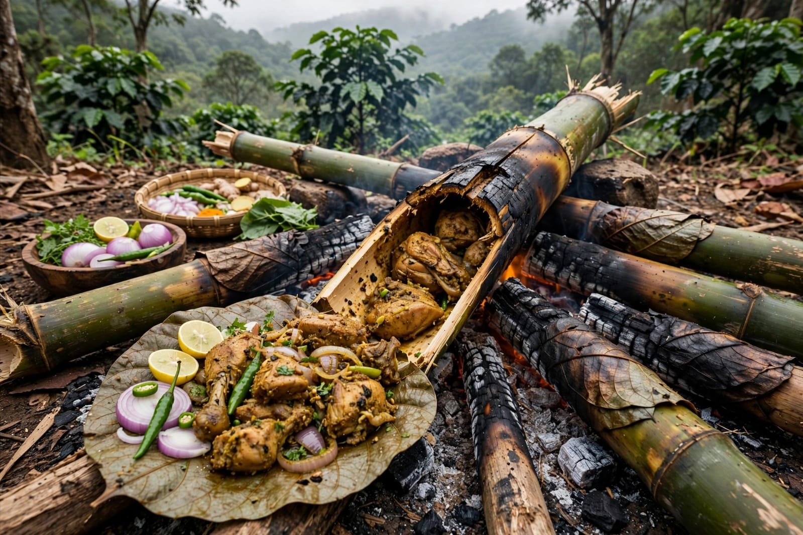
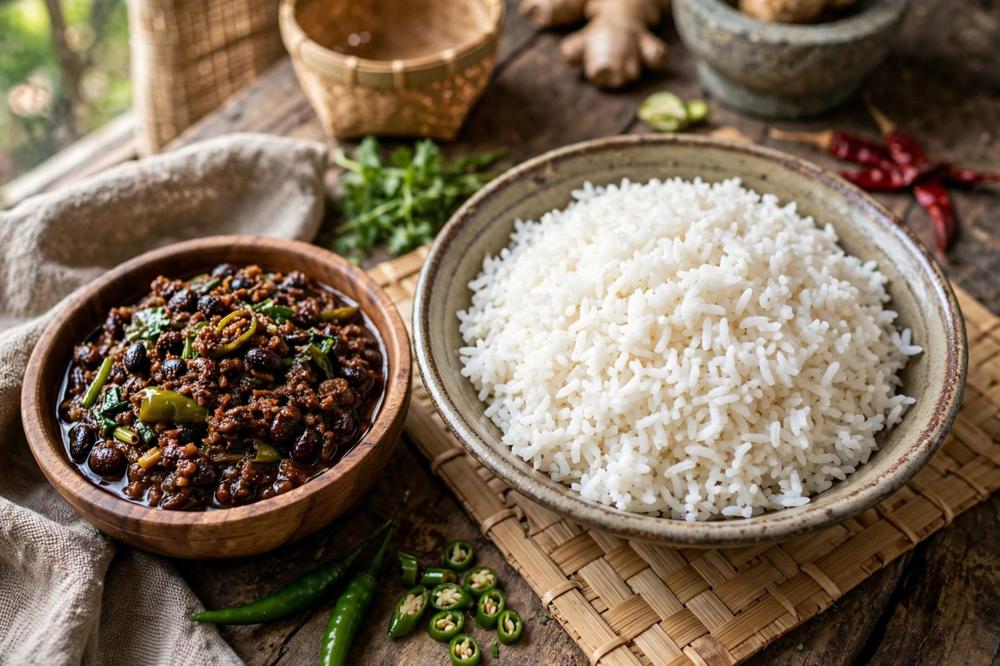

About Hornbill Festival
Hornbill Festival is one of the most important cultural festivals of Nagaland. It is held every year at Kisama Heritage Village near Kohima. The festival brings together different Naga tribes and provides an opportunity to showcase their traditional culture, customs and heritage. It is often called the "Festival of Festivals" because of the participation of many Naga communities.
The festival features traditional dances, folk songs, music and cultural performances. People wear colourful traditional clothes and ornaments while presenting their customs. Traditional sports, handicrafts and local art are also displayed during the festival. Visitors can learn about the unique traditions of the different Naga tribes through these performances and exhibitions.
Traditional food is another important part of the Hornbill Festival. Local dishes are prepared and served to visitors during the celebrations. The festival also includes music performances and cultural programmes that create a lively atmosphere. Hornbill Festival helps showcase the rich cultural heritage of Nagaland and brings people together to celebrate their traditions.
Special Foods

Smoked Pork
Smoked pork is a traditional dish enjoyed in Nagaland.

Bamboo Chicken
Chicken cooked with traditional ingredients is enjoyed during celebrations.

Axone
Axone is a traditional fermented soybean ingredient used in Naga dishes.